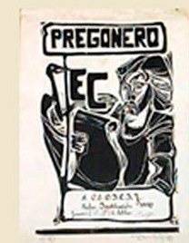
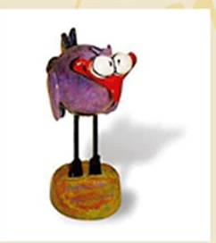
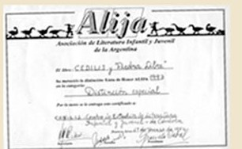
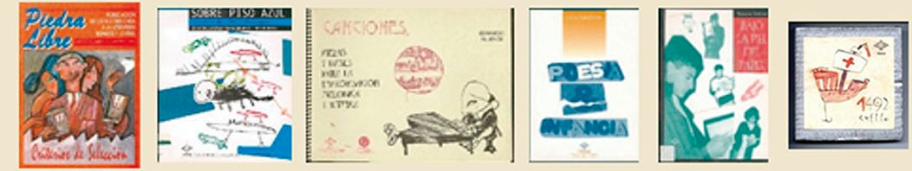
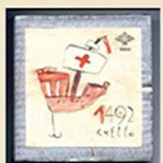
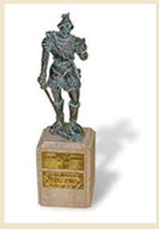
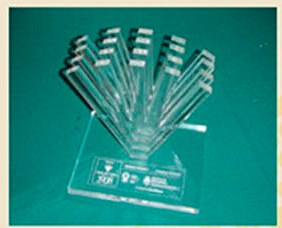
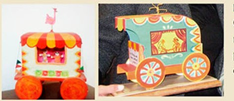
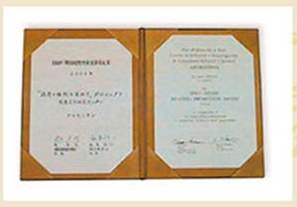
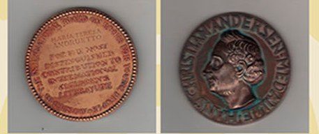

Quiénes somos
Un centro cultural para la literatura infantil y juvenil
CEDILIJ trabaja desde el barrio Güemes, en Córdoba, para garantizar accesos iguales y plurales a la cultura y el arte a través de la literatura para niñas, niños y jóvenes.
En Argentina
Distinciones nacionales
-
Pregonero — 1990 (Rubro Institución) Reconocimiento a la labor en la difusión del libro infantil y juvenil, otorgado por Ed. Colihue. Estatuilla de El Pajarito Remendado, construida por E. Nazaria.


-
Lista de Honor ALIJA — 1993 Distinción especial a CEDILIJ y la revista Piedra Libre. Otorgada por ALIJA (Asociación de Literatura Infantil y Juvenil de la Argentina), sección nacional del IBBY.

-
Fondo Estímulo para la Actividad Editorial Cordobesa Otorgado por la Municipalidad de Córdoba. Recibido por CEDILIJ en varias oportunidades: 1993 (revista Piedra Libre n.º 11, tema Criterios de Selección de LIJ), 1994 (el libro Lagartijas sobre piso azul, de Teresa Sassaroli y Mariano Medina), 1995 (el libro Canciones, piezas y bases para la improvisación melódica y rítmica, de Eduardo Allende), 1996 (los libros Poesía & Infancia y Bajo la piel del papel — Aportes a la Animación a la Lectura en los adolescentes, de Lilia Lardone y Susana Gómez respectivamente) y 1997 (el libro 1492, de Jorge Cuello).

-
Mención Especial Alberto Burnichon — 1997 Al Mejor Libro editado en Córdoba, por 1492 de Jorge Cuello.

-
Jerónimo Luis de Cabrera — 2000 Máximo honor de reconocimiento que otorga la Municipalidad de Córdoba a una institución por sus acciones de proyección social.

-
Distinción CEMUCAL — 2003 Reconocimiento a la incidencia en la comunidad de la labor institucional. Otorgado por el Centro para la Mujer y Calidad de Vida (CEMUCAL).
-
Premio Vivalectura — 2008 (Categoría Sociedad) Concurso Nacional de Experiencias de Promoción de la Lectura, por el proyecto El Puesto de Los Libros en la Feria Franca, con el lema "Entre frutas y verduras, un espacio de lectura". Otorgado por la Fundación Santillana, la Organización de Estados Iberoamericanos para la Educación, la Ciencia y la Cultura (OEI) y el Ministerio de Educación, Ciencia y Tecnología de Argentina.

-
Premio Pregonero (Rubro Especialista) Otorgado por la Fundación El Libro a miembros de CEDILIJ durante su gestión como presidentas de la institución: a Cecilia Bettolli en 1996 y a Susana Allori en 2008.

En el mundo
Distinciones internacionales
-
IBBY-Asahi Reading Promotion Award — 2002 Por el Programa de Promoción de la Lectura "Por el Derecho a Leer". Otorgado por IBBY (International Board on Books for Young People) y Asahi. Está considerado el mayor galardón internacional para las instituciones promotoras de la literatura infantil y juvenil.

-
Premio Hans Christian Andersen — 2012 A María Teresa Andruetto, escritora y miembro fundadora de CEDILIJ. Otorgado por IBBY, es considerado el máximo galardón mundial que se concede a autores del campo de la LIJ. El jurado especializado fundamentó la elección en "su maestría en la escritura de obras importantes y originales que están fuertemente centradas en la estética. Sus libros se refieren a una gran variedad de temas, como la migración, los mundos interiores, la injusticia, el amor, la pobreza, la violencia o los asuntos políticos." Video de la celebración: vimeo.com/61092532 (se abre en una pestaña nueva).
